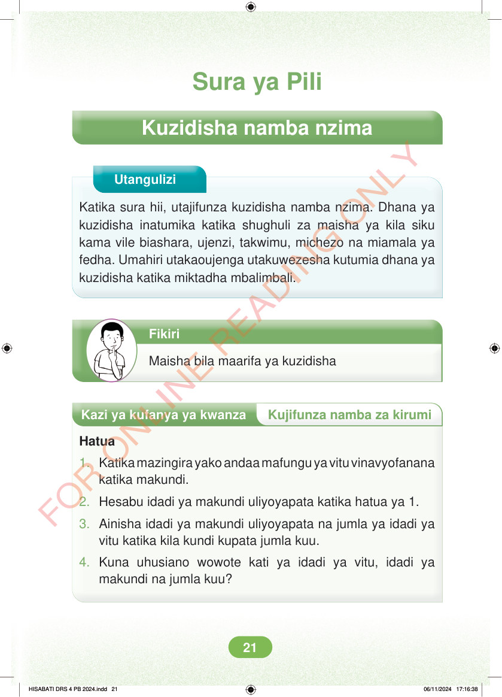

Sura ya Pili Kuzidisha namba nzima Utangulizi Katika sura hii, utajifunza kuzidisha namba nzima. Dhana ya kuzidisha inatumika katika shughuli za maisha ya kila siku kama vile biashara, ujenzi, takwimu, michezo na miamala ya fedha. Umahiri utakaoujenga utakuwezesha kutumia dhana ya kuzidisha katika miktadha mbalimbali. Fikiri Maisha bila maarifa ya kuzidisha Kazi ya kufanya ya kwanza Kujifunza namba za kirumi Hatua 1. Katika mazingira yako andaa mafungu ya vitu vinavyofanana katika makundi. 2. Hesabu idadi ya makundi uliyoyapata katika hatua ya 1. 3. Ainisha idadi ya makundi uliyoyapata na jumla ya idadi ya vitu katika kila kundi kupata jumla kuu. 4. Kuna uhusiano wowote kati ya idadi ya vitu, idadi ya makundi na jumla kuu? HISABATI DRS 4 PB 2024.indd 21 HISABATI DRS 4 PB 2024.indd 21 06/11/2024 17:16:38 06/11/2024 17:16:38